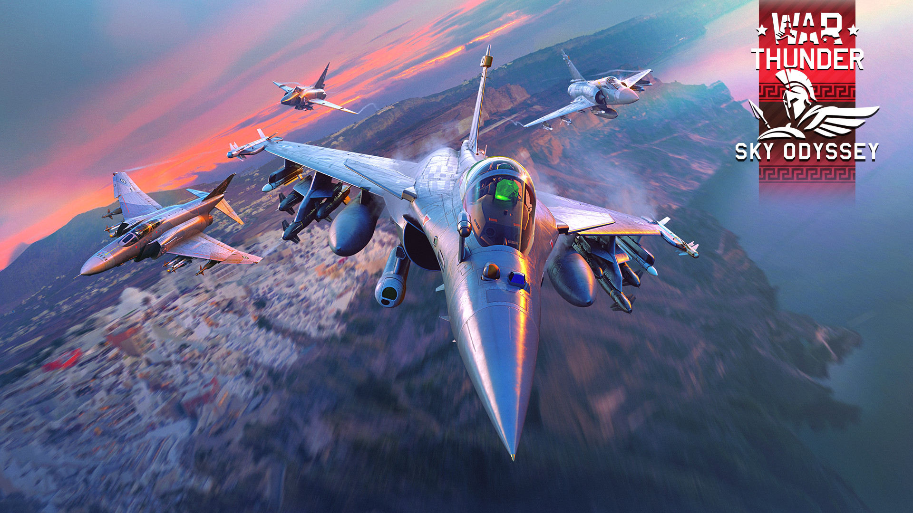
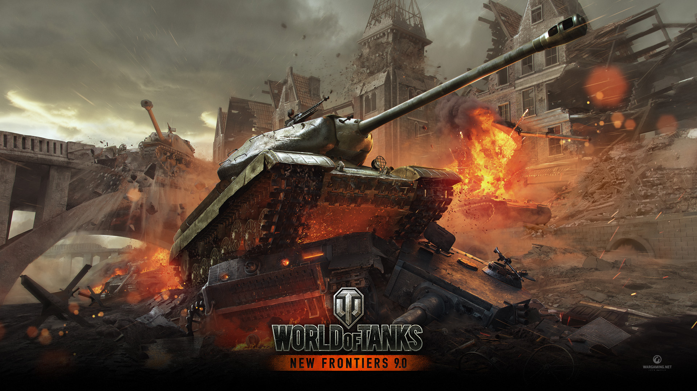
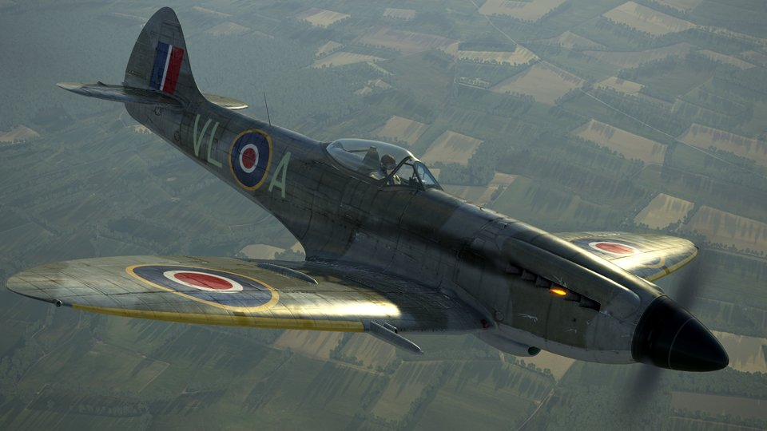

Tanques y aviones
War Thunder
Me atrae que War Thunder reúna tanques y aviones en una misma batalla. Me gusta la idea de cambiar de perspectiva entre tierra y aire.
Ver fuente oficialTambién me gusta explorar tanques y aviones en los videojuegos. Estos tres me interesan por formas distintas de acercarse al combate terrestre y al vuelo.
1 de 3

Tanques y aviones
Me atrae que War Thunder reúna tanques y aviones en una misma batalla. Me gusta la idea de cambiar de perspectiva entre tierra y aire.
Ver fuente oficial
Tanques
De World of Tanks me interesa comparar carros de distintas clases y ver cómo cada uno cambia la forma de jugar.
Ver fuente oficial
Simulación aérea
Me llama la atención su enfoque de simulación: aquí el atractivo está en aprender a pilotar y comprender mejor la aviación histórica.
Ver fuente oficial